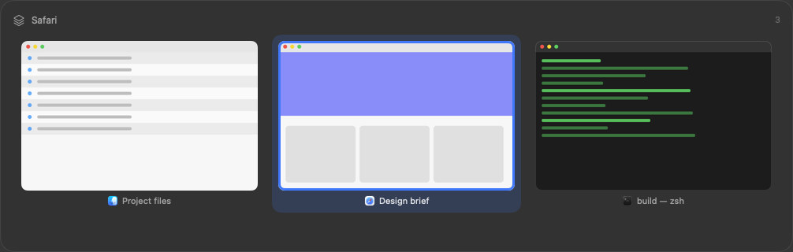

Windows, not applications
macOS switches applications with ⌘-Tab. OpenSwitchr lists every window on the current Space, most recently used first, with live previews, and lets you type to filter by app or title.
Dock hover previews and a hold-and-Tab window switcher for macOS, for anyone who works across many windows.
Early, actively developed. This page describes the latest release.
Download the latest release Source on GitHub

macOS switches applications with ⌘-Tab. OpenSwitchr lists every window on the current Space, most recently used first, with live previews, and lets you type to filter by app or title.
Point at a Dock icon to see that application's windows, and click one to jump straight to it. Minimized windows are included, dimmed and marked.
Running a separate Dock previewer and a window switcher means paying twice for the same work. Here the window index and the thumbnail cache exist once and both surfaces read from them.
Every feature, including the second hotkey, per-app rules and scroll-to-cycle, is listed in the README.
It checks GitHub for updates once a day, which you can turn off. Every download can be verified; see how.
git clone https://github.com/trsdn/OpenSwitchr.git
cd OpenSwitchr
bash scripts/build-app.shThe full steps, including signing, are in the README.
OpenSwitchr collects nothing and sends no data about you or your windows. Its one network connection is the daily update check to GitHub, which you can turn off. Preferences are stored locally and thumbnails live in memory only. This page loads no third-party resources, sets no cookies and has no analytics. Details in the README.